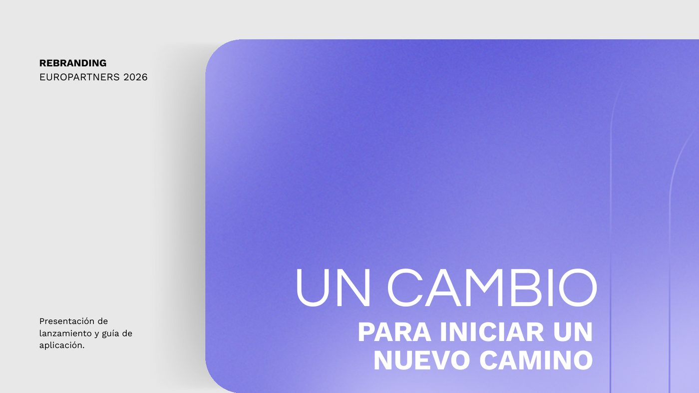
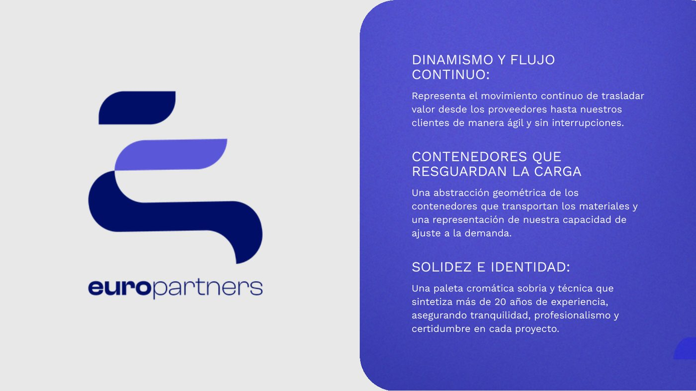
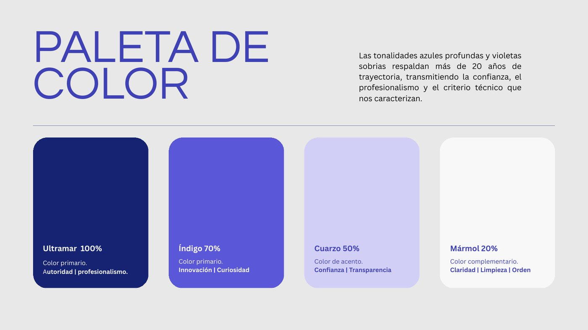
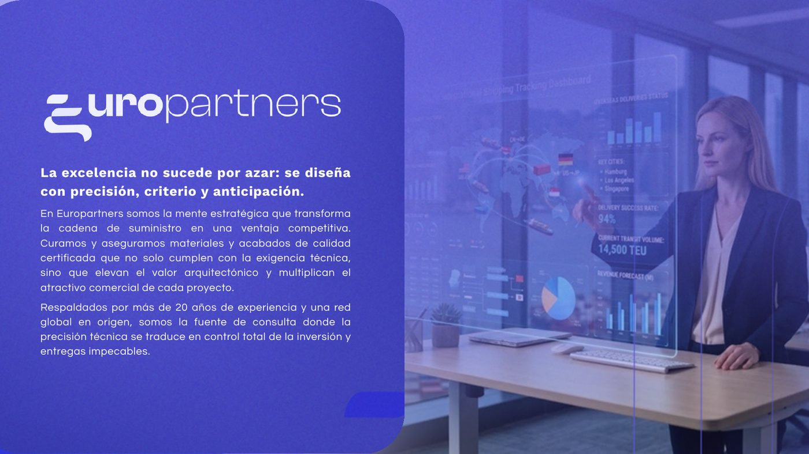
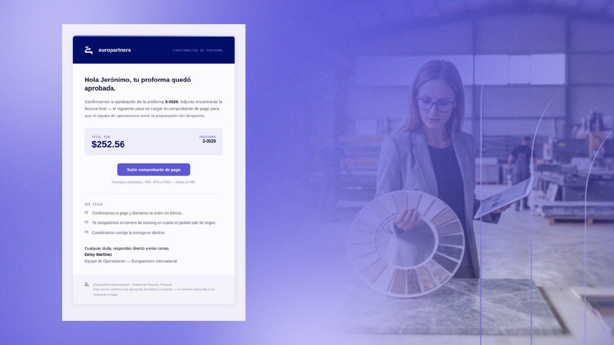

Un cambio para iniciar un nuevo camino
Europartners importa acabados para la construcción y tenía 20 años de trayectoria, pero una identidad genérica de importador, sin sistema visual y sin carácter propio. El reto era construir una marca que reflejara su experiencia: profesional, atemporal y con solidez B2B.


El concepto
La marca se define como la mente estratégica que transforma la cadena de suministro en una ventaja competitiva. El isotipo lo traduce en tres ideas:
Dinamismo y flujo continuo
El movimiento de valor desde el proveedor en origen hasta el cliente.
Contenedores que resguardan la carga
Una abstracción geométrica de los contenedores y de la capacidad de ajustarse a la demanda.
Solidez e identidad
Una paleta sobria y técnica: Ultramar, Índigo, Cuarzo y Mármol.


El sistema
El rebranding se tradujo en un sistema de diseño con principios, versiones del logotipo, tokens de color y tipografía (Quicksand y Work Sans), componentes y reglas de accesibilidad para construir la web, la plataforma B2B de pedidos, los documentos y los correos.
